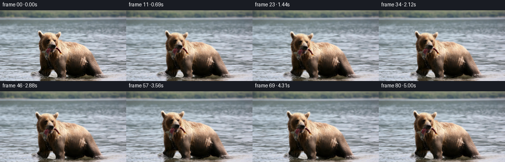
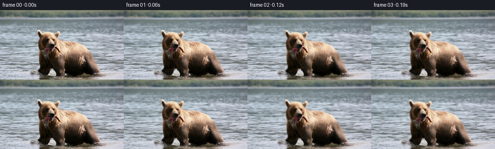

CODING AGENTS AS PIXEL WORLD MODELS
traex/GPT-6-Astra · 0872_s2
点击播放 · 原生 RGB 像素
逐轮保存的候选
回放视频、检查图与代码变化。
每份候选均可单独播放。实际图片检查记录在下方工具轨迹中。
候选 01播放与检查图
点击播放 · 原生 RGB 像素

展开代码变化
--- 上一保存版本
+++ 本次保存版本
@@ -0,0 +1,169 @@
+"""Deterministic source-pixel animation; no models or external visual assets."""
+from pathlib import Path
+import numpy as np
+from PIL import Image, ImageDraw
+from scipy.ndimage import gaussian_filter, maximum_filter, map_coordinates
+import artifact_io
+
+ROOT = Path(__file__).resolve().parent
+W, H = 256, 144
+Y, X = np.mgrid[:H, :W].astype(np.float32)
+
+
+def smooth(a, b, x):
+ v = np.clip((x-a)/(b-a), 0, 1)
+ return v*v*(3-2*v)
+
+
+def sample(im, x, y):
+ coords = np.array([y, x])
+ if im.ndim == 2:
+ return map_coordinates(im, coords, order=1, mode='reflect', prefilter=False)
+ return np.stack([map_coordinates(im[..., c], coords, order=1,
+ mode='reflect', prefilter=False) for c in range(3)], -1)
+
+
+def make_fields(image):
+ # This outline comes entirely from the source's warm/dark RGB boundaries.
+ outline = [(77,43),(79,41),(83,42),(87,47),(95,45),(105,45),
+ (114,48),(118,44),(122,44),(125,48),(124,53),(120,58),
+ (127,61),(130,64),(145,64),(157,66),(169,71),(177,76),
+ (184,83),(190,93),(195,103),(200,113),(205,121),
+ (209,128),(211,132),(218,137),(211,143),(82,143),
+ (80,136),(86,133),(80,126),(82,120),(82,110),(80,101),
+ (80,91),(81,83),(79,77),(78,70),(78,66),(80,61),
+ (82,56),(79,52),(77,47)]
+ canvas = Image.new('L', (W,H))
+ ImageDraw.Draw(canvas).polygon(outline, fill=255)
+ core = np.array(canvas).astype(np.float32)/255
+ # Broad, smooth support transports the actual photographic edge, not a cutout.
+ support = gaussian_filter(maximum_filter(core, size=13), 3.5)
+ silhouette = gaussian_filter(core, .65)
+ head = (1-smooth(84,106,Y))*(1-smooth(121,149,X))
+ depth = smooth(9,28,Y) * (.17 + .83*(Y/H)**1.25)
+ return core, support, silhouette, head, depth
+
+
+def motion(t, fields):
+ core, support, silhouette, head, depth = fields
+ p = t/5.
+ # Slow wading advance, modest weight shift, and a small perspective approach.
+ progress = p*p*(3-2*p)
+ step = 2*np.pi*t/2.55
+ shift_x = -4.9*progress + .58*np.sin(step)
+ shift_y = .65*progress + .56*np.sin(step*2)
+ enlargement = .024*progress
+ bx = shift_x + enlargement*(X-142)
+ by = shift_y + enlargement*(Y-128)
+ # The neck stays attached to the shoulders while the head dips and rises.
+ angle = .032*np.sin(2*np.pi*t/4.3) - .018*progress
+ hx, hy = X-113, Y-90
+ nod = 2.7*(np.exp(-.5*((t-1.48)/.62)**2)-np.exp(-.5*(1.48/.62)**2))
+ nod -= 1.35*(np.exp(-.5*((t-3.72)/.72)**2)-np.exp(-.5*(3.72/.72)**2))
+ nod += .23*np.sin(2*np.pi*t/.96)
+ bx += head*((np.cos(angle)-1)*hx-np.sin(angle)*hy
+ - .7*progress + .35*np.sin(2*np.pi*t/2.9))
+ by += head*(np.sin(angle)*hx+(np.cos(angle)-1)*hy+nod)
+ # Low-amplitude breathing and opposing front-paw weight transfer.
+ chest = np.exp(-((X-151)/41)**4-((Y-99)/31)**4)
+ breath = .008*np.sin(2*np.pi*t/3.15)
+ bx += chest*breath*(X-138)
+ by += chest*breath*(Y-119)*.42
+ lower = smooth(95,125,Y)*(1-smooth(134,144,Y))
+ paw1 = np.exp(-((X-91)/10.)**4)*lower
+ paw2 = np.exp(-((X-123)/10.)**4)*lower
+ bx += .75*np.sin(step)*(paw1-paw2)
+ by += .95*np.sin(step)*paw1-.76*np.sin(step)*paw2
+ # Tiny jaw tightening, with a compliant fish tip attached to the mouth.
+ jaw = np.exp(-((X-100)/10)**4-((Y-84)/5.2)**4)
+ chew = .19*(1-np.cos(2*np.pi*t/1.18))
+ by += jaw*chew
+ fish = np.exp(-((X-121)/7.5)**4-((Y-83)/6.0)**4)
+ fa = .023*np.sin(2*np.pi*t/1.18)
+ bx += fish*(-fa*(Y-77))
+ by += fish*(fa*(X-112)+chew*.4)
+ # Deep-water current: phase-continuous advection of the original river texture.
+ phase1 = Y*.47 + X*.016
+ phase2 = Y*.91 - X*.038
+ wx = depth*(1.26*(np.sin(phase1-t*1.85)-np.sin(phase1))
+ + .47*(np.sin(phase2+t*1.17)-np.sin(phase2))+.43*t)
+ wy = depth*(.47*(np.sin(Y*.32+X*.049-t*1.4)-np.sin(Y*.32+X*.049))
+ + .23*(np.sin(Y*.68-X*.074+t*2.1)-np.sin(Y*.68-X*.074)))
+ # The near-surface reflection breaks up horizontally more than the fur above it.
+ reflected = smooth(127,142,Y)*core
+ bx += reflected*.9*(np.sin(Y*.74-t*2.2)-np.sin(Y*.74))
+ by += reflected*.23*(np.sin(X*.15+Y*.29-t*1.8)-np.sin(X*.15+Y*.29))
+ u = support*bx+(1-support)*wx
+ v = support*by+(1-support)*wy
+ return u.astype(np.float32), v.astype(np.float32)
+
+
+def add_water_light(out, x, y, t, fields):
+ core, support, silhouette, head, depth = fields
+ wet = (1-sample(silhouette,x,y))*smooth(9,24,Y)
+ # Lighting remains subdued so that the fine photographed wavelets dominate.
+ glimmer = (np.sin(X*.105+Y*1.38-t*2.35)-np.sin(X*.105+Y*1.38))
+ glimmer += .42*(np.sin(X*.25-Y*.67+t*1.65)-np.sin(X*.25-Y*.67))
+ glimmer *= .70*depth*wet
+ out += glimmer[...,None]*np.array([.89,.96,1.])
+ # Broad broken wakes spreading from the wading bear's feet.
+ ramp = smooth(0,.6,t)
+ ringlight = np.zeros((H,W),np.float32)
+ centers = [(91,130,18.,.45),(127,133,14.,1.7),(191,130,20.,2.3)]
+ for cx,cy,r0,phase in centers:
+ cx -= 4.9*(t/5.)**2*(3-2*t/5.)
+ dx = X-cx
+ dy = (Y-cy)/.245
+ radius = np.sqrt(dx*dx+dy*dy+1)
+ theta = np.arctan2(dy,dx)
+ env = np.exp(-((radius-(r0+8*t))/26)**2)*smooth(8,19,radius)
+ # Angular modulation prevents perfect synthetic ellipses.
+ irregular = .55+.26*np.sin(theta*5+phase)+.15*np.sin(X*.46+Y*.77)
+ ringlight += 2.25*np.sin(radius*.57-t*3.7+phase)*env*irregular
+ out += (ringlight*wet*ramp*smooth(113,128,Y))[...,None]*np.array([.91,.96,1.])
+ return out
+
+
+def add_drips(out, t, fields, u, v):
+ # A few subpixel droplets from the held fish, not a continuous spray.
+ for j, start in enumerate([.64, 1.92, 3.22, 4.36]):
+ age = t-start
+ if 0 < age < .65:
+ sx,sy = 123.,87.
+ du = float(sample(u,np.array([[sx]],np.float32),np.array([[sy]],np.float32))[0,0])
+ dv = float(sample(v,np.array([[sx]],np.float32),np.array([[sy]],np.float32))[0,0])
+ px = sx+du+age*(.8 if j%2 else -1.1)
+ py = sy+dv+22*age+76*age*age
+ opacity = .30*smooth(0,.07,age)*(1-smooth(.51,.65,age))
+ dot = np.exp(-.5*((X-px)/.30)**2-.5*((Y-py)/(.42+age*.8))**2)*opacity
+ out[:] = out*(1-dot[...,None])+np.array([203,201,190])*dot[...,None]
+ return out
+
+
+def generate():
+ source = np.asarray(Image.open(ROOT/'first_frame.png').convert('RGB'))
+ assert source.shape == (H,W,3)
+ image = source.astype(np.float32)
+ fields = make_fields(image)
+ frames = [source.copy()]
+ for i in range(1,81):
+ t = i/16.
+ u,v = motion(t,fields)
+ # Invert the coherent forward motion. This preserves the full native image,
+ # including fur fringe, mouth/fish texture and the water between the legs.
+ sx,sy = X-u,Y-v
+ for _ in range(5):
+ sx,sy = X-sample(u,sx,sy),Y-sample(v,sx,sy)
+ out = sample(image,sx,sy)
+ out = add_water_light(out,sx,sy,t,fields)
+ out = add_drips(out,t,fields,u,v)
+ frames.append(np.clip(np.rint(out),0,255).astype(np.uint8))
+ frames = np.stack(frames)
+ artifact_io.save(frames,ROOT)
+ print('Saved:',frames.shape,frames.dtype,'first frame exact:',np.array_equal(frames[0],source))
+ difference = np.abs(np.diff(frames.astype(np.float32),axis=0))
+ print('Temporal absolute difference mean / max frame mean:',float(difference.mean()),float(difference.mean((1,2,3)).max()))
+ return frames
+
+if __name__ == '__main__':
+ generate()
候选 02播放与检查图
点击播放 · 原生 RGB 像素


展开代码变化
--- 上一保存版本
+++ 本次保存版本
@@ -37,7 +37,7 @@
ImageDraw.Draw(canvas).polygon(outline, fill=255)
core = np.array(canvas).astype(np.float32)/255
# Broad, smooth support transports the actual photographic edge, not a cutout.
- support = gaussian_filter(maximum_filter(core, size=13), 3.5)
+ support = gaussian_filter(maximum_filter(core, size=17), 6.0)
silhouette = gaussian_filter(core, .65)
head = (1-smooth(84,106,Y))*(1-smooth(121,149,X))
depth = smooth(9,28,Y) * (.17 + .83*(Y/H)**1.25)
@@ -91,7 +91,7 @@
+ .23*(np.sin(Y*.68-X*.074+t*2.1)-np.sin(Y*.68-X*.074)))
# The near-surface reflection breaks up horizontally more than the fur above it.
reflected = smooth(127,142,Y)*core
- bx += reflected*.9*(np.sin(Y*.74-t*2.2)-np.sin(Y*.74))
+ bx += reflected*.38*(np.sin(Y*.74-t*2.2)-np.sin(Y*.74))
by += reflected*.23*(np.sin(X*.15+Y*.29-t*1.8)-np.sin(X*.15+Y*.29))
u = support*bx+(1-support)*wx
v = support*by+(1-support)*wy
候选 03播放与检查图
可观测工具轨迹
实际执行的命令与返回图片。
命令 1exit 0
/bin/bash -lc "ls -la && cat GENERATION_RULES.md && printf '\\n---PROMPT---\\n' && cat prompt.txt"
命令 2exit 0
/bin/bash -lc "cat task_spec.json && cat artifact_io.py && python - <<'PY'
from PIL import Image
import numpy as np
im=np.array(Image.open('first_frame.png'))
print(im.shape)
print('range', im.min((0,1)), im.max((0,1)))
# coarse RGB grid
im2=np.array(Image.fromarray(im).resize((32,18)))
for row in im2:
print(' '.join('%02x%02x%02x'%tuple(p) for p in row))
PY"命令 3exit 0
/bin/bash -lc "python - <<'PY'
import numpy as np
from PIL import Image
im=np.array(Image.open('first_frame.png')).astype(float)
# RGB category map at half res, '.' cool water; fur color brightness levels
im=np.array(Image.fromarray(im.astype('uint8')).resize((128,72))).astype(float)
print('BEAR color / brightness map')
for y,row in enumerate(im):
s=''
for r,g,b in row:
if r>b+6 and r>g+2:
s+='@%#*+=-: '[min(8,int((r+g+b)/3/256*9))]
elif (r+g+b)/3<65:s+='X'
else:s+='.'
print('%03d '%(y*2)+s)
print('\\nLuminance head crop x72..145 y40..103, each character one pixel:')
a=np.array(Image.open('first_frame.png')).astype(float)
for y in range(40,104):
print('%03d '%y+''.join(' .,:;irsXA253hMHGS#9B&@'[min(21,int(v/256*22))] for v in a[y,72:146].mean(-1)))
PY"命令 4exit 0
/bin/bash -lc "python - <<'PY'
import importlib.util
print('scipy',bool(importlib.util.find_spec('scipy')))
from PIL import Image
import numpy as np
im=np.asarray(Image.open('first_frame.png')).astype(float)
for y in range(40,144,2):
r,g,b=im[y].T
m=((r-b>4)&(r-g>1))|((r<65)&(g<65)&(b<60))
m[:70]=False
if y<42:m[:]=False
edges=np.flatnonzero(np.diff(np.r_[False,m,False])).reshape(-1,2)
print(y,edges.tolist())
# fine color-coded fish area where silver and red may be present
print('\\ncolor map x78:140 y65:102; K black,B brown,R red,Y golden,W white, S silver; b water')
for y in range(65,103):
st=''
for r,g,b in im[y,78:140]:
lum=(r+g+b)/3
if lum<25:c='K'
elif lum<50:c='k'
elif r-g>25 and r-b>25:
c='R' if b>g-5 else 'B' if lum<110 else 'Y'
elif r>b+5:c='b' if lum<100 else 't' if lum<160 else 'T'
elif r>b-3:c='s' if lum<120 else 'S' if lum<180 else 'W'
else:c='.'
st+=c
print(y,st)
PY"命令 5exit 0
/bin/bash -lc "python - <<'PY'
from PIL import Image
import numpy as np
im=np.array(Image.open('first_frame.png'))
for y in range(74,144,3):
print('%3d '%y+' '.join('%3d,%3d,%3d'%tuple(im[y,x]) for x in range(104,144,3)))
# brightest/least saturated pixels in chest for fish possibilities
PY"命令 6exit 0
/bin/bash -lc "cat > generate.py <<'PY'
\"\"\"Deterministic source-pixel animation; no models or external visual assets.\"\"\"
from pathlib import Path
import numpy as np
from PIL import Image, ImageDraw
from scipy.ndimage import gaussian_filter, maximum_filter, map_coordinates
import artifact_io
ROOT = Path(__file__).resolve().parent
W, H = 256, 144
Y, X = np.mgrid[:H, :W].astype(np.float32)
def smooth(a, b, x):
v = np.clip((x-a)/(b-a), 0, 1)
return v*v*(3-2*v)
def sample(im, x, y):
coords = np.array([y, x])
if im.ndim == 2:
return map_coordinates(im, coords, order=1, mode='reflect', prefilter=False)
return np.stack([map_coordinates(im[..., c], coords, order=1,
mode='reflect', prefilter=False) for c in range(3)], -1)
def make_fields(image):
# This outline comes entirely from the source's warm/dark RGB boundaries.
outline = [(77,43),(79,41),(83,42),(87,47),(95,45),(105,45),
(114,48),(118,44),(122,44),(125,48),(124,53),(120,58),
(127,61),(130,64),(145,64),(157,66),(169,71),(177,76),
(184,83),(190,93),(195,103),(200,113),(205,121),
(209,128),(211,132),(218,137),(211,143),(82,143),
(80,136),(86,133),(80,126),(82,120),(82,110),(80,101),
(80,91),(81,83),(79,77),(78,70),(78,66),(80,61),
(82,56),(79,52),(77,47)]
canvas = Image.new('L', (W,H))
ImageDraw.Draw(canvas).polygon(outline, fill=255)
core = np.array(canvas).astype(np.float32)/255
# Broad, smooth support transports the actual photographic edge, not a cutout.
support = gaussian_filter(maximum_filter(core, size=13), 3.5)
silhouette = gaussian_filter(core, .65)
head = (1-smooth(84,106,Y))*(1-smooth(121,149,X))
depth = smooth(9,28,Y) * (.17 + .83*(Y/H)**1.25)
return core, support, silhouette, head, depth
def motion(t, fields):
core, support, silhouette, head, depth = fields
p = t/5.
# Slow wading advance, modest weight shift, and a small perspective approach.
progress = p*p*(3-2*p)
step = 2*np.pi*t/2.55
shift_x = -4.9*progress + .58*np.sin(step)
shift_y = .65*progress + .56*np.sin(step*2)
enlargement = .024*progress
bx = shift_x + enlargement*(X-142)
by = shift_y + enlargement*(Y-128)
# The neck stays attached to the shoulders while the head dips and rises.
angle = .032*np.sin(2*np.pi*t/4.3) - .018*progress
hx, hy = X-113, Y-90
nod = 2.7*(np.exp(-.5*((t-1.48)/.62)**2)-np.exp(-.5*(1.48/.62)**2))
nod -= 1.35*(np.exp(-.5*((t-3.72)/.72)**2)-np.exp(-.5*(3.72/.72)**2))
nod += .23*np.sin(2*np.pi*t/.96)
bx += head*((np.cos(angle)-1)*hx-np.sin(angle)*hy
- .7*progress + .35*np.sin(2*np.pi*t/2.9))
by += head*(np.sin(angle)*hx+(np.cos(angle)-1)*hy+nod)
# Low-amplitude breathing and opposing front-paw weight transfer.
chest = np.exp(-((X-151)/41)**4-((Y-99)/31)**4)
breath = .008*np.sin(2*np.pi*t/3.15)
bx += chest*breath*(X-138)
by += chest*breath*(Y-119)*.42
lower = smooth(95,125,Y)*(1-smooth(134,144,Y))
paw1 = np.exp(-((X-91)/10.)**4)*lower
paw2 = np.exp(-((X-123)/10.)**4)*lower
bx += .75*np.sin(step)*(paw1-paw2)
by += .95*np.sin(step)*paw1-.76*np.sin(step)*paw2
# Tiny jaw tightening, with a compliant fish tip attached to the mouth.
jaw = np.exp(-((X-100)/10)**4-((Y-84)/5.2)**4)
chew = .19*(1-np.cos(2*np.pi*t/1.18))
by += jaw*chew
fish = np.exp(-((X-121)/7.5)**4-((Y-83)/6.0)**4)
fa = .023*np.sin(2*np.pi*t/1.18)
bx += fish*(-fa*(Y-77))
by += fish*(fa*(X-112)+chew*.4)
# Deep-water current: phase-continuous advection of the original river texture.
phase1 = Y*.47 + X*.016
phase2 = Y*.91 - X*.038
wx = depth*(1.26*(np.sin(phase1-t*1.85)-np.sin(phase1))
+ .47*(np.sin(phase2+t*1.17)-np.sin(phase2))+.43*t)
wy = depth*(.47*(np.sin(Y*.32+X*.049-t*1.4)-np.sin(Y*.32+X*.049))
+ .23*(np.sin(Y*.68-X*.074+t*2.1)-np.sin(Y*.68-X*.074)))
# The near-surface reflection breaks up horizontally more than the fur above it.
reflected = smooth(127,142,Y)*core
bx += reflected*.9*(np.sin(Y*.74-t*2.2)-np.sin(Y*.74))
by += reflected*.23*(np.sin(X*.15+Y*.29-t*1.8)-np.sin(X*.15+Y*.29))
u = support*bx+(1-support)*wx
v = support*by+(1-support)*wy
return u.astype(np.float32), v.astype(np.float32)
def add_water_light(out, x, y, t, fields):
core, support, silhouette, head, depth = fields
wet = (1-sample(silhouette,x,y))*smooth(9,24,Y)
# Lighting remains subdued so that the fine photographed wavelets dominate.
glimmer = (np.sin(X*.105+Y*1.38-t*2.35)-np.sin(X*.105+Y*1.38))
glimmer += .42*(np.sin(X*.25-Y*.67+t*1.65)-np.sin(X*.25-Y*.67))
glimmer *= .70*depth*wet
out += glimmer[...,None]*np.array([.89,.96,1.])
# Broad broken wakes spreading from the wading bear's feet.
ramp = smooth(0,.6,t)
ringlight = np.zeros((H,W),np.float32)
centers = [(91,130,18.,.45),(127,133,14.,1.7),(191,130,20.,2.3)]
for cx,cy,r0,phase in centers:
cx -= 4.9*(t/5.)**2*(3-2*t/5.)
dx = X-cx
dy = (Y-cy)/.245
radius = np.sqrt(dx*dx+dy*dy+1)
theta = np.arctan2(dy,dx)
env = np.exp(-((radius-(r0+8*t))/26)**2)*smooth(8,19,radius)
# Angular modulation prevents perfect synthetic ellipses.
irregular = .55+.26*np.sin(theta*5+phase)+.15*np.sin(X*.46+Y*.77)
ringlight += 2.25*np.sin(radius*.57-t*3.7+phase)*env*irregular
out += (ringlight*wet*ramp*smooth(113,128,Y))[...,None]*np.array([.91,.96,1.])
return out
def add_drips(out, t, fields, u, v):
# A few subpixel droplets from the held fish, not a continuous spray.
for j, start in enumerate([.64, 1.92, 3.22, 4.36]):
age = t-start
if 0 < age < .65:
sx,sy = 123.,87.
du = float(sample(u,np.array([[sx]],np.float32),np.array([[sy]],np.float32))[0,0])
dv = float(sample(v,np.array([[sx]],np.float32),np.array([[sy]],np.float32))[0,0])
px = sx+du+age*(.8 if j%2 else -1.1)
py = sy+dv+22*age+76*age*age
opacity = .30*smooth(0,.07,age)*(1-smooth(.51,.65,age))
dot = np.exp(-.5*((X-px)/.30)**2-.5*((Y-py)/(.42+age*.8))**2)*opacity
out[:] = out*(1-dot[...,None])+np.array([203,201,190])*dot[...,None]
return out
def generate():
source = np.asarray(Image.open(ROOT/'first_frame.png').convert('RGB'))
assert source.shape == (H,W,3)
image = source.astype(np.float32)
fields = make_fields(image)
frames = [source.copy()]
for i in range(1,81):
t = i/16.
u,v = motion(t,fields)
# Invert the coherent forward motion. This preserves the full native image,
# including fur fringe, mouth/fish texture and the water between the legs.
sx,sy = X-u,Y-v
for _ in range(5):
sx,sy = X-sample(u,sx,sy),Y-sample(v,sx,sy)
out = sample(image,sx,sy)
out = add_water_light(out,sx,sy,t,fields)
out = add_drips(out,t,fields,u,v)
frames.append(np.clip(np.rint(out),0,255).astype(np.uint8))
frames = np.stack(frames)
artifact_io.save(frames,ROOT)
print('Saved:',frames.shape,frames.dtype,'first frame exact:',np.array_equal(frames[0],source))
difference = np.abs(np.diff(frames.astype(np.float32),axis=0))
print('Temporal absolute difference mean / max frame mean:',float(difference.mean()),float(difference.mean((1,2,3)).max()))
return frames
if __name__ == '__main__':
generate()
PY
python generate.py"命令 7exit 0
/bin/bash -lc "python - <<'PY'
import generate
import numpy as np
from PIL import Image
im=np.asarray(Image.open('first_frame.png'))
f=generate.make_fields(im)
dets=[]
for t in np.linspace(0,5,81):
u,v=generate.motion(t,f)
uy,ux=np.gradient(u);vy,vx=np.gradient(v)
dets.append(((1+ux)*(1+vy)-uy*vx).min())
print('Minimum local warp Jacobian:',min(dets))
p=np.load('pixels.npz')['pixels']
print('Tensor shape:',p.shape,'dtype:',p.dtype)
ref=im.astype(np.uint32)
ref=(ref[:,:,0]<<16)|(ref[:,:,1]<<8)|ref[:,:,2]
print('Packed first frame matches:',np.array_equal(p[:,:,0],ref))
print('Unique frames:',len({p[:,:,i].tobytes() for i in range(81)}))
PY
command -v ffmpeg || true
ls -lh pixels.npz index.html generate.py"命令 8exit 0
/bin/bash -lc "python - <<'PY'
import generate as g
import numpy as np
from PIL import Image
f=g.make_fields(np.array(Image.open('first_frame.png')))
for t in [1,2,3,4,5]:
u,v=g.motion(t,f);uy,ux=np.gradient(u);vy,vx=np.gradient(v)
d=(1+ux)*(1+vy)-uy*vx
print(t,d.min(),np.unravel_index(d.argmin(),d.shape), 'nearbear',d[40:127,70:205].min(), 'negative', (d<0).sum())
PY"命令 9exit 0
/bin/bash -lc "python - <<'PY'
p='generate.py'
s=open(p).read().replace('maximum_filter(core, size=13), 3.5','maximum_filter(core, size=17), 6.0').replace('bx += reflected*.9*','bx += reflected*.38*')
open(p,'w').write(s)
PY
python - <<'PY'
import generate as g
import numpy as np
from PIL import Image
f=g.make_fields(np.array(Image.open('first_frame.png')))
lo=1; hi=1; norm=0
for t in np.linspace(0,5,81):
u,v=g.motion(t,f);uy,ux=np.gradient(u);vy,vx=np.gradient(v)
d=(1+ux)*(1+vy)-uy*vx
lo=min(lo,d.min());hi=max(hi,d.max())
eig=(ux+vy)/2+np.sqrt((ux-vy)**2/4+uy*vx+0j)
norm=max(norm,np.abs(eig).max())
print('Jacobian range',lo,hi,'max field eigenvalue',norm)
PY
python generate.py"保存候选 3 份；完成命令 9 次；可验证图片返回 0 张。原始 API 响应与完整日志保留在本地。